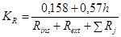
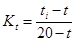
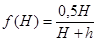
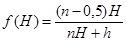
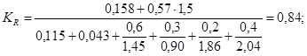
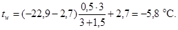

ГОСУДАРСТВЕННЫЙ
ИНСТИТУТ
ПО ПРОЕКТИРОВАНИЮ КОММУНАЛЬНЫХ
ДОРОЖНО-ТРАНСПОРТНЫХ СООРУЖЕНИЙ
(ГИПРОКОММУНДОРТРАНС)
МИНЖИЛКОМХОЗА РСФСР
ПОСОБИЕ
ПО РАСЧЕТУ ТЕПЛОПОТЕРЬ ПОМЕЩЕНИЙ
ЗАГЛУБЛЕННЫХ СООРУЖЕНИЙ ГРАЖДАНСКОЙ ОБОРОНЫ
(К СНиП II-11-77*
И РЕКОМЕНДАЦИЯМ ПО ПРОЕКТИРОВАНИЮ ЗПУ)
Утверждено
приказом Гипрокоммундортранса
Минжилкомхоза РСФСР
от 12 декабря 1986 г. № 85
Москва
Центральный институт типового проектирования
Рекомендовано к изданию техническим советом Гипрокоммундортранса Минжилкомхоза РСФСР.
Содержит методику расчета теплопотерь помещений заглубленных сооружений гражданской обороны и способ определения годового расхода теплоты на отопление.
Для инженерно-технических работников проектных организаций.
При пользовании Пособием следует учитывать утвержденные изменения строительных норм и правил и государственных стандартов, публикуемые в журнале «Бюллетень строительной техники», «Сборнике изменений строительных норм и правил» Госстроя СССР и информационном указателе «Государственные стандарты СССР» Госстандарта СССР.
Пособие разработано на основании результатов теплотехнических исследований заглубленных сооружений (ЗС) котлованного типа и опыта проектирования систем отопления в этих сооружениях.
В Пособии приведены материалы, необходимые и достаточные для определения теплопотерь помещений отдельно стоящих заглубленных одно- и многоэтажных сооружений, а также годового расхода теплоты на отопление.
Теплопотери объектов гражданской обороны, расположенных в подвалах наземных зданий, рассчитываются по указаниям СНиП 2.04.05-86.
Пособие разработано Гипрокоммундортрансом - канд. техн. наук О.В. Усенков.
1.1. Приведенные в Пособии значения теплопотерь рассчитаны с учетом изменения в течение года климатических воздействий на отличающиеся большой тепловой инерцией ограждения ЗС при постоянной температуре воздуха в помещениях.
В качестве расчетных при определении поверхности нагревательных приборов систем отопления, выборе оборудования источников теплоснабжения, гидравлическом расчете трубопроводов отопления и тепловых сетей принимаются максимальные теплопотери, которые имеют место после наиболее холодной пятидневки.
1.2. Определенные с помощью Пособия максимальные теплопотери относятся к периоду постоянной эксплуатации сооружения. Первоначальный прогрев («натоп») ограждений и грунтового массива осуществляется, как правило, во время строительства ЗС.
1.3. Настоящее Пособие распространяется на отапливаемые ЗС прямоугольного очертания в плане и разрезе, имеющие толщину покрытия h от 0,5 до 2,5 м, размеры в плане не менее высоты сооружения при вариантах посадки ЗС: верх обсыпки в одном уровне или выше поверхности земли, врезка в склон, но при уклоне обсыпки не более 1:6, расположенные в климатических районах с расчетной температурой наружного воздуха td,e от минус 10 до минус 50 °С.
На ЗС, расположенные в районах вечной мерзлоты, а также для помещений с расчетной температурой воздуха в помещениях ниже 5 °С Пособие не распространяется.
1.4. Расчетная температура воздуха в помещениях ti, °С, в зависимости от назначения помещения принимается по табл. 1. В убежищах, в помещениях для укрываемых, расчетная температура воздуха принимается по условиям эксплуатации этих помещений в мирное время, но не менее чем на 3 °С выше точки росы наружного воздуха по параметрам А для теплого периода года и не ниже 10 °С.
|
ti, °C |
|
|
Кабинеты, штабные и служебные |
20 |
|
Узлы связи, вычислительные центры, диспетчерские пункты |
19 |
|
Палаты и изоляторы медпунктов |
21 |
|
Операционные медпунктов |
23 |
|
Для медперсонала |
20 |
|
Комнаты отдыха |
20 |
|
Коридоры |
18-20 |
|
Столовые, кухни |
20 |
|
Машинные залы ДЭС, трансформаторные, аккумуляторные |
18 |
|
Электрощитовые |
19 |
|
Санпропускник (без гигиенического душа) |
20 |
|
Гигиенический душ |
22 |
|
Санитарные узлы |
18 |
|
Предфильтров и фильтров-поглотителей |
22 |
|
Вентиляционные, насосные, холодильные станции |
18 |
|
Тамбуры входов |
22 |
1.5. Расчетная температура наружного воздуха td,e, °С, принимается по СНиП 2.04.05-86 по параметрам Б для холодного периода года (средняя температура наиболее холодной пятидневки обеспеченностью 0,92).
2.1. С целью облегчения вычислений по определению теплопотерь через ограждения ЗС составлены графики теплопотерь через условные зоны, на которые разделен внутренний периметр сооружения.
Для одноэтажных сооружений (черт. 1) - две зоны:
1 зона - покрытие и пол qc+f (черт. 2);
2 зона - стена Qm,1s (черт. 3).
Черт. 1. Разбивка на зоны ограждений одноэтажного сооружения
Черт. 2. Графики зависимости qg,(c+f) от h и td,e
Черт. 3. Графики зависимости Qm,g,1s от h и td,e
Для двухэтажных сооружений (черт. 4) - четыре зоны:
1 зона - покрытие qс (черт. 5);
2 зона - стена верхнего этажа Qm,upw (черт. 6);
3 зона - стена нижнего этажа Qm,unw (черт. 7);
|
td,e, °C |
-10 |
-15 |
-20 |
-25 |
-30 |
-35 |
-40 |
-45 |
-50 |
|
qf, Вт/м2 |
0,35 |
0,8 |
1,2 |
1,65 |
1,9 |
2,2 |
2,5 |
2,7 |
2,9 |
Черт. 4. Разбивка на зоны ограждений двухэтажного сооружения
2.2. На графиках и в таблице для покрытия и пола (см. черт. 2, 5, табл. 2) приведены значения удельных теплопотерь q, Вт/м2, а для стен (см. черт. 3, 6, 7) - теплопотерь через 1 м стены Qm, Вт/м, вдоль оси наружной стены в границах соответствующего этажа. В значениях Qm учтены увеличенные теплопотери в углах.
Черт. 5. Графики зависимости qg,c от h и td,e
Черт. 6. Графики зависимости Qт,g,upw от h и td,e
Черт. 7. Графики зависимости Qm,g,unw от h и td,e
2.3. На вспомогательном графике (черт. 8) приведены усредненные значения удельных теплопотерь qmt,w, Вт/м2 (через стену на участках вблизи междуэтажного перекрытия двухэтажного ЗС), которые используются в расчетах по формулам (4), (5).
2.4. На графиках значения теплопотерь определяются в зависимости от толщины покрытия и климатического района строительства сооружения, в табл. 2 - только от климатического района.
2.5. Толщина покрытия h, м, измеряется от внутренней поверхности потолка верхнего этажа до наружной поверхности обсыпки (см. черт. 1, 4).
2.6. Климатический район строительства характеризуется расчетной температурой наружного воздуха td,e, °С (п. 1.5).
Графики на черт. 2, 3, 5 - 8 и табл. 2 выполнены для значений td,e от минус 10 до минус 50 через 5 °С.
Для значений td,e, отличных от приведенных в графиках, величины q и Qm можно определять интерполяцией.
Черт. 8. Графики зависимости qg,mt,w от h и td,e
2.7. Значения максимальных теплопотерь на графиках (черт. 3 - 8) и в табл. 2 получены для следующих усредненных условий и параметров:
а) усредненный коэффициент теплопроводности грунта и ограждающих конструкций λ = 1,75 Вт/(м∙°С);
б) величина сопротивления тепловосприятию у внутренних поверхностей ограждений Rins, м2∙°С/Вт:
стена, потолок - 0,115;
пол и участки ограждений, примыкающие к углу - 0,17;
в) величина сопротивления теплоотдаче у наружной поверхности покрытия
Rext = 0,043 м2∙°С/Вт;
г) высота этажа Н = 3,0 м;
д) температура воздуха в помещениях ti = 20 °С.
2.8. В тех случаях, когда для проектируемого сооружения условия по одному или нескольким показателям отличаются от приведенных в п. 2.7, к значениям qg и Qm,g, найденным по графикам и табл. 2, при необходимости получить более точный результат, следует вводить корректирующие поправки.
2.9. Если по данным изысканий коэффициент теплопроводности местных грунтов λsoi не равен 1,75 Вт/(м °С), а в конструкции покрытия имеются слои (теплоизоляционный, воздушные прослойки и т.п.), коэффициенты теплопроводности которых отличаются от 1,75 Вт/(м °С), то теплопотери через ограждения следует определять по формулам:
в) для табл. 2
где qk, Qm,k - значения теплопотерь, соответствующие заданным для проектируемого сооружения условиям;
qg, Qm,g - значения теплопотерь, определяемые по графикам черт. 2, 3, 5 - 8 и по табл. 2;
R = Rins + Rext + Rh = 0,158 + 0,57h - термическое сопротивление покрытия толщиной h, рассчитанное по условиям п. 2.7 а, б, в;
Rk = Rins + Rехt + ∑Rj - действительное термическое сопротивление покрытия;
здесь Rj = δj / λj - термическое сопротивление j-го слоя покрытия (δj - толщина слоя, м; λj - коэффициент теплопроводности слоя, Вт/(м∙°С), принимаемый по СНиП II-3-79** и табл. 3);

Kλ = 0,57 λsoi - коэффициент, учитывающий теплопроводность местного грунта, которая принимается по табл. 3.
|
Средняя плотность, γ, кг/м3 |
Коэффициент теплопроводности, λ, Вт/(м∙°С) |
Удельная теплоемкость С, кДж/(кг∙°С) |
Коэффициент температуропроводности а, м2/ч |
|
|
Базальт |
2900 |
3,50 |
0,88 |
0,0048 |
|
Гранит |
2700 |
2,70 |
0,92 |
0,0041 |
|
Диабаз |
2700 |
2,40 |
0,76 |
0,0044 |
|
Кварцит |
2600 |
4,29 |
0,80 |
0,0074 |
|
Гнейс |
2700 |
3,13 |
0,92 |
0,0045 |
|
Сланец |
2600 |
1,97 |
0,84 |
0,0035 |
|
Глинистый сланец |
2400 |
0,93 |
1,01 |
0,0013 |
|
Песчаник |
2400 |
1,73 |
0,84 |
0,0030 |
|
Известняк |
2300 |
1,11 |
0,88 |
0,0019 |
|
Известняк-ракушечник |
1400 |
0,64 |
0,92 |
0,0018 |
|
Туф известковый |
1300 |
0,52 |
0,92 |
0,0014 |
|
Мел |
1780 |
0,68 |
0,92 |
0,0014 |
|
Грунт, % влажности: |
||||
|
глинистый - 8 |
1400 |
0,73 |
1,13 |
0,0019 |
|
18 |
1800 |
1,54 |
1,76 |
0,0017 |
|
40 |
1850 |
1,74 |
2,26 |
0,0015 |
|
песчаный - 2 |
1350 |
0,56 |
0,80 |
0,0021 |
|
8 |
1400 |
0,90 |
1,05 |
0,0024 |
|
15 |
1800 |
1,88 |
1,55 |
0,0024 |
|
25 |
1850 |
2,04 |
1,93 |
0,0022 |
|
Кварцевый песок сухой |
1600 |
0,46 |
0,84 |
0,0020 |
2.10. Если высота этажа Н не равна 3,0 м, то действительные теплопотери через стены одно- и двухэтажных ЗС, верхних и нижних этажей многоэтажных ЗС следует вычислять по формуле
Qт,Н = Qт,g + qg,mt,w (Н - 3,0), Вт/м. (4)
Теплопотери через стены средних этажей многоэтажных ЗС могут быть вычислены по формуле
2.11. Высоту этажа H, м, следует определять:
одноэтажного ЗС - по размеру между внутренними поверхностями потолка и пола;
верхнего (нижнего) этажей многоэтажного ЗС - по размеру от внутренней поверхности потолка (пола) до оси междуэтажного перекрытия;
среднего этажа многоэтажного ЗС - по размеру между осями междуэтажных перекрытий.
Значения H и h, м, принимаются с точностью до 0,1 м.
2.12. Если температура воздуха в помещении ti отличается от 20 °С, то теплопотери через ограждения следует определять по формулам:
где 
t - температура среды, с которой происходит теплообмен через ограждение, °С.
2.13. При определении величины поправки Кt к теплопотерям через покрытие и пол могут быть использованы значения температуры среды (tc и tf), вычисленные с учетом теплоинерционных свойств покрытия и приведенные в табл. 4.
|
td,e,°C |
tc, °С, для ЗС при h, м |
tf, °С, для ЗС |
||||||
|
0,5 |
1,0 |
14 |
2,0 |
2,5 |
3,0 |
одноэтажных |
многоэтажных |
|
|
Минус 10 |
-13,5 |
-10,0 |
-405 |
0,5 |
3,0 |
4,0 |
10,0 |
13,0 |
|
Минус 20 |
-24,0 |
-19,0 |
-13,0 |
-8,0 |
-5,0 |
-4,0 |
6,5 |
9,0 |
|
Минус 30 |
-34,5 |
-28,5 |
-22,0 |
-16,0 |
-13,5 |
-12,0 |
3,0 |
5,0 |
|
Минус 40 |
-45,5 |
-38,0 |
-31,0 |
-24,0 |
-22,5 |
-21,0 |
-0,5 |
1,0 |
|
Минус 50 |
-57,0 |
-47,5 |
-40,4 |
-34,5 |
-31,0 |
-29,5 |
-4,0 |
-3,0 |
Для qg,(с+f), определяемых по графику черт. 2, используется величина Кt покрытия, так как влияние на результат расчета теплопотерь через пол невелико.
Приближенные значения температуры среды для стен одноэтажных и верхнего этажа многоэтажных сооружений следует определять по формуле
tw = (tс - tf) f(H) + tf, °С, (8)
где 

здесь п - число этажей.
Температура среды для стен средних и нижнего этажей принимается равной tf для многоэтажных ЗС.
2.14. Расчетные теплопотери через наружные ограждения для каждого значения ti и с учетом указаний пп. 2.9 - 2.11 следует вычислять по формулам:
а) для 1 зоны (см. черт. 1, 4)
б) для 2 и 3 зон (см. черт. 1, 4)
в) для 4 зоны (см. черт. 4)
3.1. Теплопотери расположенных у наружной стены помещений одноэтажных ЗС, верхнего или нижнего этажей многоэтажных ЗС следует определять по формуле
где A = la, м2;
здесь l - длина наружной стены, в пределах помещения, м;
а - размер помещения по нормали к наружной стене, м.
Значения величин qd и Qт,d вычисляются по формулам (9) - (11), а для упрощенных расчетов определяются по графикам черт. 2, 3, 5 - 8 и табл. 2.
3.2. Теплопотери расположенных у наружной стены помещений средних этажей многоэтажных сооружений следует определять по формуле
3.3. Для определения теплопотерь средних помещений одно- или двухэтажных ЗС, не имеющих в числе ограждений наружных стен, из формулы (12) следует исключить второе слагаемое.
3.4. Площадь и линейные размеры наружных ограждений при расчете теплопотерь помещений должны определяться по строительным чертежам следующим образом:
значения l для неугловых помещений - по размерам между осями внутренних стен, для угловых помещений - по размерам от внутренних поверхностей наружных стен до осей внутренних стен;
значения а - по размерам от внутренних поверхностей наружных стен до осей внутренних стен или между осями внутренних стен.
Линейные размеры следует принимать с точностью до 0,1 м, а площади наружных ограждений - до 0,1 м2.
3.5. Для удобства производства вычислений по формулам (12), (13) при определении теплопотерь группы помещений ЗС рекомендуется составлять расчетную табл. 5.
|
ti, °С |
l, м |
a, м |
A, м2 |
Аqd, Вт |
lQт,d, Вт |
Q, Вт |
||
|
номер |
наименование |
|||||||
|
1 |
2 |
3 |
4 |
5 |
6 |
7 |
8 |
9 |
Графы 1, 2, 4, 5 заполняются по данным строительной части проекта, графа 3 - в соответствии с указаниями п. 1.4, графа 6 - по результатам вычисления А, в графы 7 и 8 записывается результат перемножения величин соответственно из граф 6 и 4 на значения расчетных теплопотерь через ограждения, а в графу 9 - результат сложения величин из граф 7 и 8.
При расчете теплопотерь средних помещений ЗС графа 8 не заполняется, а для расположенных у наружной стены помещений среднего этажа многоэтажных сооружений не используются графы 5 - 7.
4.1. Годовой расход теплоты на отопление ЗС может быть определен по формуле
Qyea = 31,7 Q [α + β (1,6 - h)], ГДж, (14)
где Q - теплопотери сооружения, кВт;
h - толщина покрытия, м;
α, β - эмпирические коэффициенты, определяемые по графикам черт. 9, в зависимости от климатического района td,e.
Черт. 9. Графики зависимости коэффициентов α и β от td,e
Величина Qуеа учитывается при проведении технико-экономического анализа по определению целесообразности применения электроотопления, при проектировании складов топлива для отопительной котельной и др.
Пример 1. Рассчитать теплопотери помещений двухэтажного ЗС, фрагменты планов верхнего и нижнего этажей которого приведены на черт. 10. Район строительства - Минск, td,e = - 25 °С.
Черт. 10. Фрагменты планов этажей
Температура воздуха во всех помещениях ti = 20 °С. Толщина покрытия h = 1,6 м. Высота каждого этажа Н = 3,4 м.
Данные о коэффициенте теплопроводности местного грунта отсутствуют (принимаем λsoi = 1,75 Вт/(м∙°С).
Решение:
1. По графикам черт. 5 - 8 находим для td,e = - 25 °С и h = 1,6 м:
qg,c = 34 Вт/м2;
Qт,g,ирw = 38 Вт/м;
Qт,g,иnw = 20 Вт/м;
qg,f = 1,65 Вт/м2;
qg,mt,w = 5,0 Вт/м2.
2. По условиям примера КR = Кλ = Kt = 1.
Qm,H,upw = 38 + 5 (3,4 - 3) = 40 Вт/м;
Qm,H,unw = 20 + 5 (3,4 - 3) = 22 Вт/м.
4. Расчетные теплопотери через ограждения равны:
qd,c = 34 Вт/м2;
Qm,H,upw = 40 Вт/м;
Qm,H,unw = 22 Вт/м;
qd,f = 1,65 Вт/м2.
5. Составляем расчетную табл. 6 теплопотерь помещений.
|
ti, °С |
l, м |
a, м |
A, м2 |
Аqd, Вт |
lQт,d, Вт |
Q, Вт |
||
|
номер |
наименование |
|||||||
|
Верхний этаж |
||||||||
|
111, 112 |
Служебная комната |
20 |
6,0 |
6,0 |
36,0 |
36∙34 = 1224 |
6∙40 = 240 |
1224 + 240 = 1464 |
|
113 |
Приемная |
20 |
6,0 |
6,0 |
36,0 |
1224 |
(6 + 6) 40 = 480 |
1704 |
|
120, 123 |
Коридор |
20 |
1,5 |
7,5 |
11,2 |
381 |
- |
381 |
|
121 |
Машбюро |
20 |
4,5 |
6,0 |
27,0 |
918 |
- |
918 |
|
122 |
Служебная комната |
20 |
6,0 |
6,0 |
36,0 |
1224 |
- |
1224 |
|
124 |
Секретная часть |
20 |
3,0 |
4,5 |
13,5 |
459 |
3∙40 = 120 |
579 |
|
131 |
Комната дежурного |
20 |
4,5 |
4,5 |
20,2 |
688 |
4,5∙40 = 180 |
868 |
|
Нижний этаж |
||||||||
|
207 |
ЛАЗ |
20 |
6,0 |
13,0 |
81,0 |
81∙1,65 = 137 |
6∙22 = 132 |
137 + 132 = 269 |
|
208 |
Аппаратная |
20 |
6,0 |
6,0 |
36,0 |
59 |
132 |
191 |
|
209 |
Телекс |
20 |
6,0 |
6,0 |
36,0 |
59 |
(6 + 6) 22 = 264 |
323 |
|
215 |
ЗИП |
20 |
4,5 |
4,5 |
20,2 |
33 |
- |
33 |
|
216 |
Коридор |
20 |
1,5 |
7,5 |
11,2 |
18 |
- |
18 |
|
217 |
Мастерская |
20 |
4,5 |
3,0 |
13,5 |
22 |
- |
22 |
|
218 |
ЭВМ |
20 |
7,5 |
6,0 |
45,0 |
74 |
165 |
239 |
Пример 2. Рассчитать теплопотери помещений одноэтажного ЗС, фрагмент плана которого соответствует плану верхнего этажа на черт. 10.
Район строительства с td,e = - 31 °С. Температура воздуха ti в помещениях:
Номер помещения ti, °C
111 23
121 21
120, 122 20
112, 113, 123, 124 19
131 16
Покрытие состоит из следующих слоев:
обсыпка [местный грунт - суглинок λ1 = 1,45 Вт/(м∙°С)] - 0,6 м;
дренирующий слой [песок λ2 = 0,90 Вт/(м∙°С) ] - 63 м;
защитный слой, стяжка, подуклонка [бетон λ3 = 1,86 Вт/(м∙°С)] - 0,2 м;
плита покрытия [железобетон λ4 = 2,04 Вт/(м∙°С)] - 0,4 м.
Общая толщина покрытия h = 1,5 м. Высота этажа Н = 3,0 м.
Решение:
1. По графикам черт. 2, 3 для td,е = - 31 °С и h = 1,5 м находим:
qg,(c+f) = 43,5 Вт/(м2∙°С);
Qm,g,1s = 53 Вт/(м∙°С).
2. Вычисляем коэффициенты КR и Кλ:

KR = 0,57∙1,45 = 0,83
3. По табл. 4 интерполяцией определяем:
tc = - 22,9 °С; tf = 2,7 °С.

5. Вычисляем значения (табл. 7):
|
Коэффициент Кt при ti, °С |
|||||
|
23 |
21 |
20 |
19 |
16 |
|
|
Покрытие |
1,07 |
1,02 |
1,0 |
0,98 |
0,91 |
|
Стена |
1,12 |
1,04 |
1,0 |
0,96 |
0,84 |
6. По формулам (9) - (11) вычисляем значения расчетных теплопотерь через ограждения (табл. 8):
|
Расчетные теплопотери покрытия qd,(c+f) Вт/м2, и стены Qm,d,1s, Вт/м, при ti, °С |
|||||
|
23 |
21 |
20 |
19 |
16 |
|
|
Покрытие |
39,1 |
37,3 |
36,5 |
35,8 |
33,25 |
|
Стена |
49,3 |
45,7 |
44,0 |
42,2 |
36,95 |
7. Составляем расчетную табл. 9 теплопотерь помещений.
Пример 3. Определить для ТЭО теплопотери одноэтажного ЗС размером в плане 36´48 м, расположенного в Москве (td,e = - 26 °С).
Высота этажа H = 3,0 м, толщина покрытия h = 1,2 м.
Решение:
1. По графикам черт. 2, 3 находим:
qg,(c+f) = 50 Вт/м2;
Qm,g,1s = 49 Вт/м.
2. Теплопотери ЗС равны:
Q = 36∙48·50 + 2(36 + 48)49 = 94630 Вт.
Пример 4. Определить годовой расход теплоты для ЗС по примеру 3.
Решение:
1. По графикам черт. 9 находим коэффициенты α и β для td,e = -26 °С:
а = 0,48, β = 1,06.
2. По формуле (17) вычисляем:
Qуеа = 31,7∙94,63[0,48 - 0,106 (1,6 - 1,2)] = 1312,7 ГДж.
|
ti, °С |
l, м |
a, м |
A, м2 |
Аqd, Вт |
lQт,d, Вт |
Q, Вт |
||
|
номер |
наименование |
|||||||
|
111 |
Операционная медпункта |
23 |
6,0 |
6,0 |
36,0 |
36∙39,1 = 1408 |
6∙49,3 = 296 |
1704 |
|
112 |
Аппаратная УС |
19 |
6,0 |
6,0 |
36,0 |
36∙35,8 = 1289 |
6∙42,2 = 253 |
1542 |
|
113 |
ЭВМ |
19 |
6,0 |
6,0 |
36,0 |
36∙35,8 = 1289 |
(6 + 6)42,2 = 506 |
1795 |
|
120 |
Коридор медпункта |
20 |
1,5 |
7,5 |
11,2 |
11,2∙36,5 = 409 |
- |
409 |
|
121 |
Палата медпункта |
21 |
4,5 |
6,0 |
27,0 |
27∙37,3 = 1007 |
- |
1007 |
|
122 |
Служебное помещение |
20 |
6,0 |
6,0 |
36,0 |
36∙36,5 = 1314 |
- |
1314 |
|
123 |
Коридор УС |
19 |
1,5 |
7,5 |
11,2 |
11,2∙35,8 = 401 |
- |
401 |
|
124 |
Регулировочная |
19 |
3,0 |
4,5 |
13,5 |
13,5∙35,8 = 483 |
3∙42,2 = 127 |
610 |
|
131 |
Технологическое помещение |
16 |
4,5 |
4,5 |
20,2 |
20,2∙33,25 = 672 |
4,5∙36,5 = 164 |
836 |
Справочное
1. ВЕЛИЧИНЫ
q - удельные теплопотери или плотность теплового потока через 1 м2, Вт/м2;
Qт - теплопотери или тепловой поток через 1 м стены в границах этажа, Вт/м;
Q - теплопотери помещения, сооружения, Вт;
t - температура воздуха, °С;
h - толщина покрытия, м;
H - высота этажа, м;
А - площадь ограждения, м2;
а, l - размеры помещения, м;
λ - коэффициент теплопроводности, Вт/(м∙°С);
R - термическое сопротивление, м2∙°С/Вт;
2. ИНДЕКСЫ
е - наружный;
i - внутренний;
d - расчетный;
g - величина, определяемая по графикам черт. 2, 3, 5 - 8 и табл. 2;
k - величина, приведенная к условиям проектируемого сооружения;
с - покрытие;
f - пол;
w - стена;
1s - одноэтажное сооружение;
upw - верхний этаж двухэтажного сооружения;
иnw - то же нижний;
тt - усредненный;
ins - внутренняя поверхность ограждения;
ехt - то же наружная;
soi - грунт;
i - номер слоя многослойного покрытия;
уеа - годовой.
СОДЕРЖАНИЕ